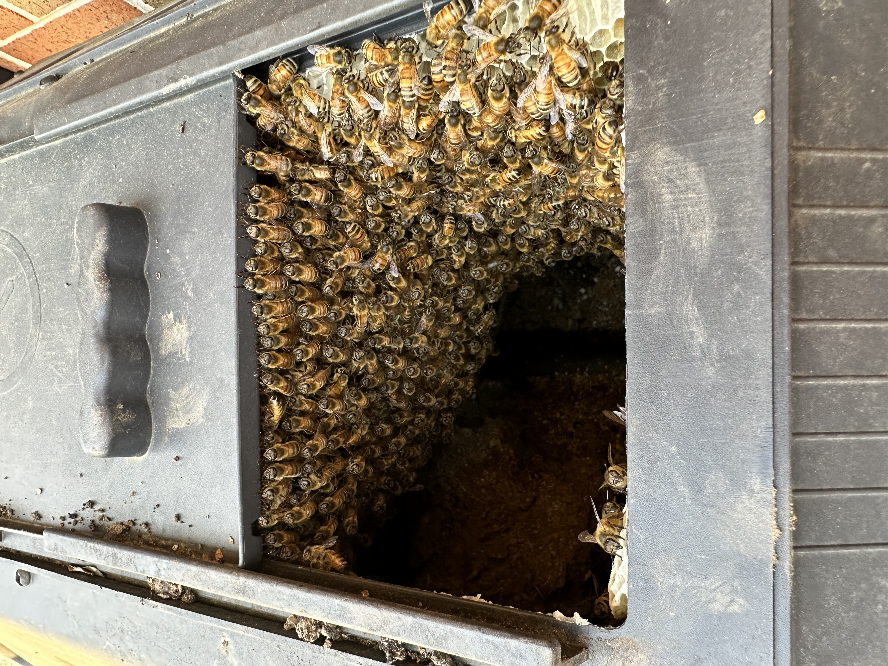

Bees under your deck or shed floor
Steady traffic disappearing under the deck boards, into the gap beneath the shed, or through a knot hole in the skirting. A swarm went shopping and picked your deck framing, because dry and enclosed with a small doorway is exactly the specification. Here's the good news: ground-level cavities are often the most accessible live removals we do.
Why they chose down there
Scout bees are looking for a cavity of roughly the right volume, dry, shaded, defensible, with a modest entrance. A hollow tree fits. So does the boxed-in space under a deck, the void beneath a shed floor, the framing around a hot tub, a compost bin, an unused grill, or a stack of old equipment nobody's moved in three years.
Almost all of these start as a swarm that spent a day clustered nearby before the scouts settled on your deck. If you noticed a ball of bees in the yard a week or two ago and then it vanished — this is where it went.
They'll be building comb from the day they arrive, so the calendar matters. More on that below.

Make sure they're honey bees
Yellow jackets like these spaces every bit as much as honey bees do, and under a deck is one of the most common places to find either. The location tells you nothing on its own — so check the insect:
- Honey bee. Fuzzy, amber and brown, soft-edged banding, often with visible lumps of pollen on the back legs. Builds waxy comb. Ignores your food.
- Yellow jacket. Smooth and shiny, hard-edged bright yellow and black, narrow waist, no pollen. Builds grey paper. Comes after your drink and your burger in August.
It genuinely decides what happens next: honey bees are removed alive by us, wasps are a pest job handled by Lawns Plants & Pests — same family, same phone number. Full comparison on honey bees or yellow jackets, or just text a photo and let us call it.
Low usually means easier
Compared with a colony forty feet up in a soffit or buried behind brick, a ground-level cavity has a lot going for it:
- No ladder work. A large share of what makes structural removals expensive and slow is height and access. Under a deck, we're standing on the ground.
- Openable. Deck boards lift. Skirting panels come off. Shed floors have access. Compost bins come apart entirely. That's very different from opening a plaster ceiling.
- Visible. We can often see the comb before committing to anything, which makes the quote accurate rather than a guess.
- Repairable. Putting six deck boards back is not the same conversation as patching stucco or matching forty-year-old siding.
Most live honey bee removals in Central PA run $500 to $1,000+ depending on access and how much comb there is. Ground-level work tends to sit at the friendlier end of that. See live bee removal for how quoting works.
Three things that turn a small job into a big one
- Spray them. Beyond killing a colony that would have been rehomed — a dead colony under your deck leaves pounds of wax and honey with nothing to tend it. It ferments, it leaks, and it draws ants, wasps, mice, and beetles to the exact spot you sit in the summer. It also makes the eventual cleanout worse, because now it's a mess rather than a hive.
- Seal the entrance. Bees are persistent and resourceful, and a sealed colony will usually find or make another way out — occasionally into an adjoining space you like even less. Sealing without removing is never the answer.
- Wait until autumn. Understandable, and expensive. A colony that moved in during May will have built a great deal more comb by September, and every additional month means more to remove and more honey to deal with.
What a removal looks like
- You text a photo of the entrance and, if you can safely get it, a wider shot of the deck or shed. Tell us roughly when you first noticed them — that's our best clue to how much comb is in there.
- We open the cavity. Usually lifting boards or removing a skirting panel. We work with the structure rather than through it wherever we can.
- Comb and bees come out. Brood comb is tied into frames so the colony can carry on raising it, and the bees — queen included — go into a hive box.
- We clean it out. Remaining wax and honey removed, because leaving it behind is what attracts the next swarm as well as everything else.
- It goes back together, and the colony rides to one of our Central PA apiaries.
Common questions
Can I use the deck while they're there?
Usually, with care. Honey bees defend the immediate area around the entrance rather than the whole yard, and a colony under a deck is often surprisingly easy to live beside for a few weeks. Keep the flight path clear, don't block the entrance, and don't run a leaf blower or a power washer at it. If anyone in the house is sting-allergic, treat it as urgent instead.
How do I know how long they've been there?
Watch the legs. Bees returning with heavy pollen loads means brood is being raised, so it's an established colony rather than a swarm that arrived yesterday. If it's spring and you saw a cluster in the yard recently, it's probably days rather than months — and that's the cheapest possible time to call.
Will they leave on their own over winter?
Usually not — a healthy colony overwinters in place and comes out again in spring. If it does die out, that's arguably worse: the comb and honey are still there, unattended, and they leak and attract pests. An empty cavity with old comb in it is also prime real estate for next spring's swarm.
Do I have to take my whole deck apart?
Almost never. Most of these need a few boards up or a panel off. We'll tell you at the quote what access we need, and if a section genuinely has to come out we'll say so before starting rather than halfway through.
They're under a shed I was going to demolish anyway.
Then tell us that, because it makes the job considerably easier and cheaper — the same way a tree that's already coming down is the best version of bees in a tree. Just call before anything is torn apart, not during.
Bees under your deck, shed, or compost bin?
Text a photo of the entrance with your town, and tell us roughly when you first noticed them. Live removal across Harrisburg, Hershey, Camp Hill, Mechanicsburg, Carlisle, Palmyra, and Central PA — the bees leave alive and go to a working apiary.
Call or Text 717-379-3248